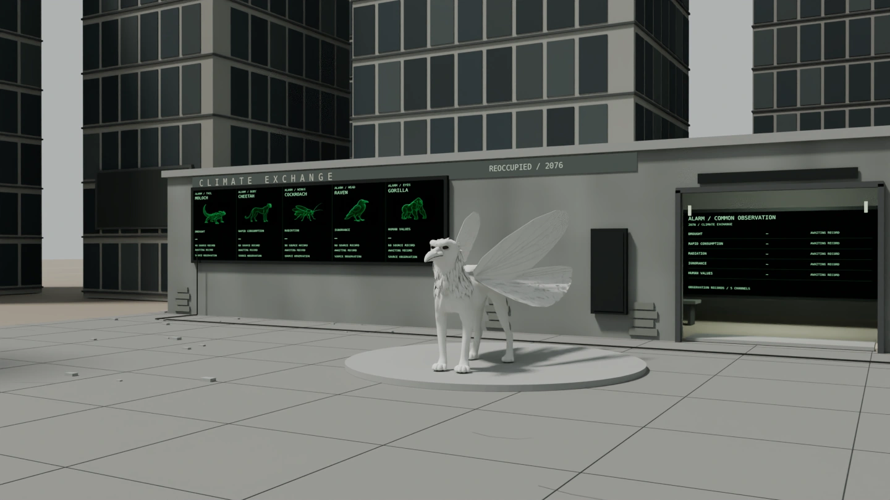

Preparing the base
3D is unavailable. The latest scene preview is shown.
TRY AGAIN
ALARM
DİLARA ALTINKEPÇE ARSLAN
HOME VIEW
ENTER BASE
360°
MOTION: ON
QUALITY: BALANCED
Sound on
VOLUME
Fullscreen
II — ANIMALS
III — GRIFFIN / 2076
Griffin